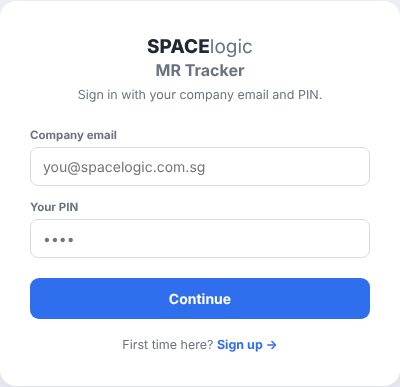
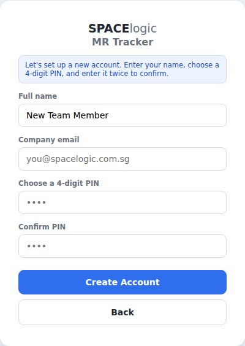
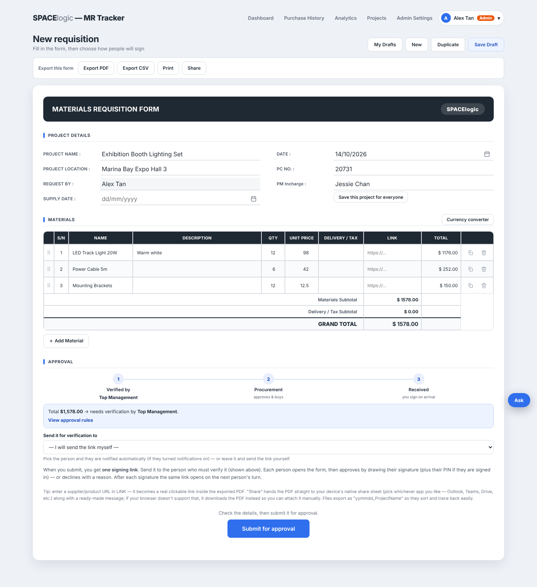
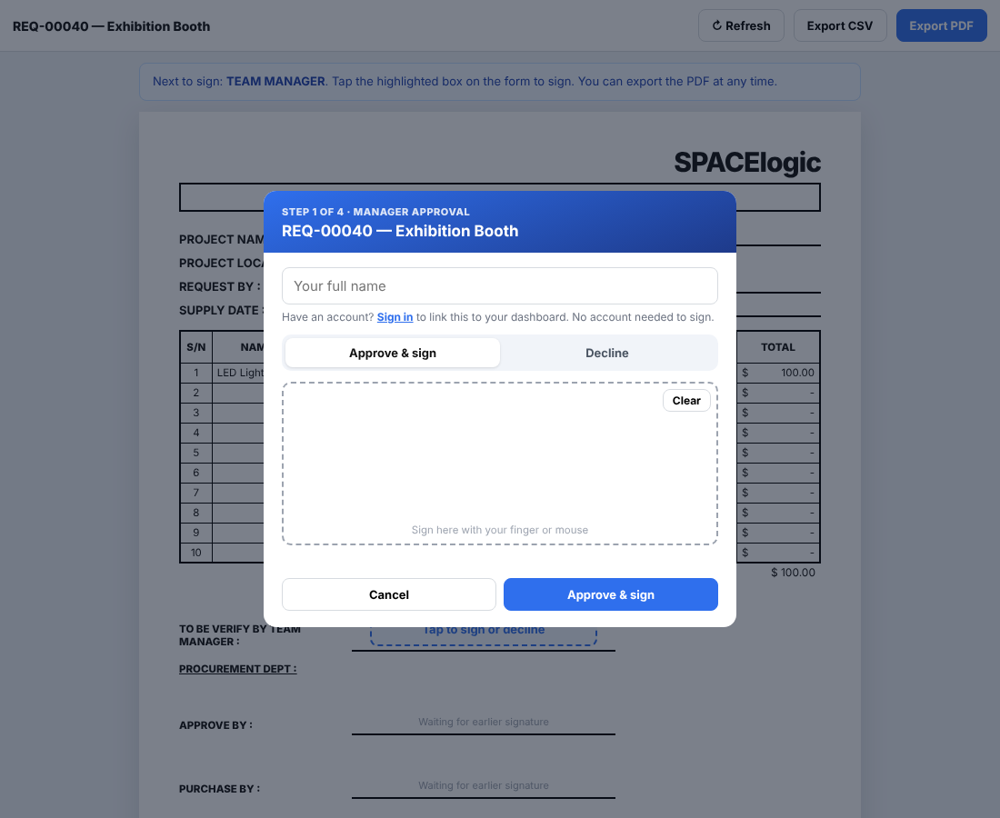
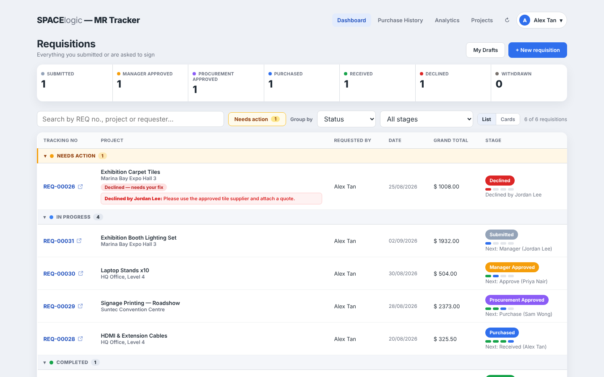
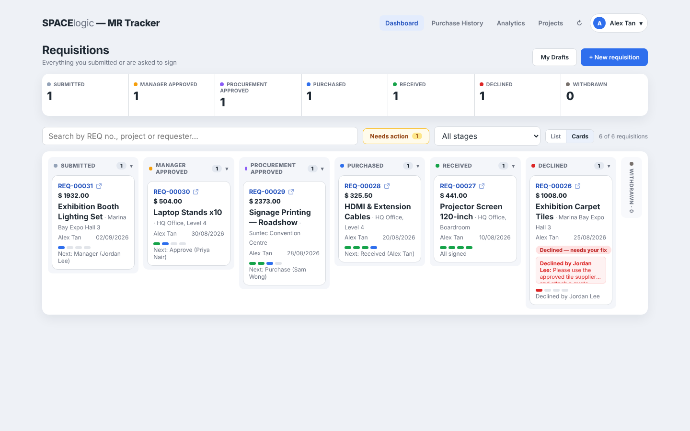
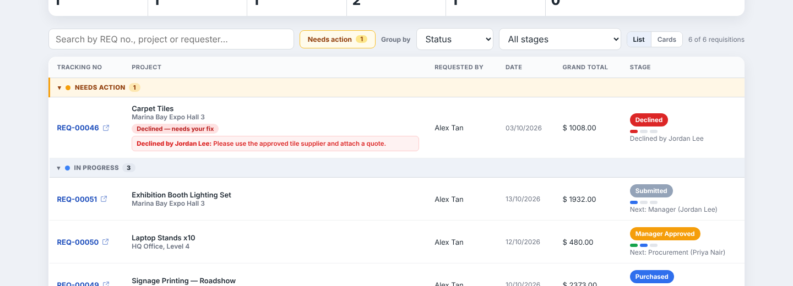
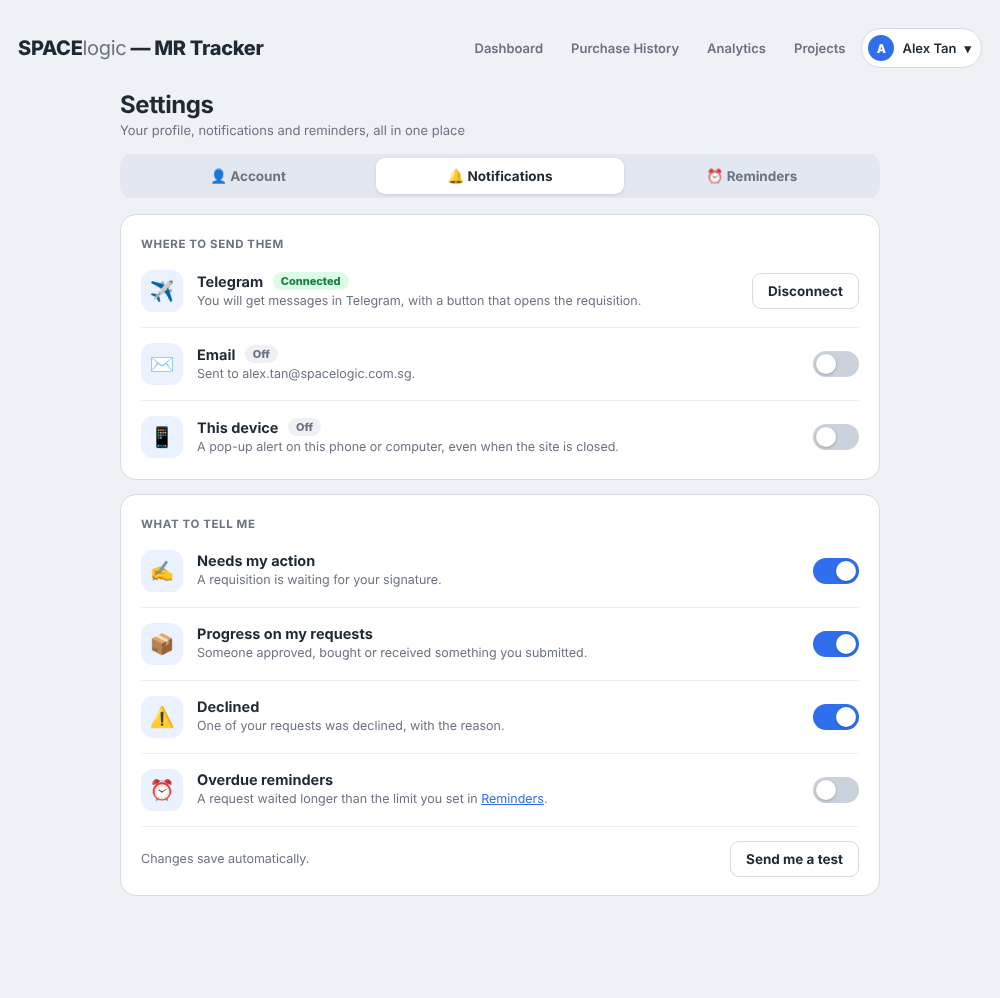
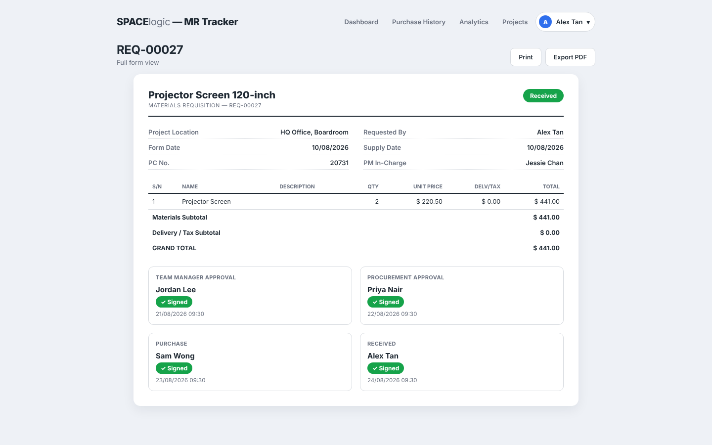
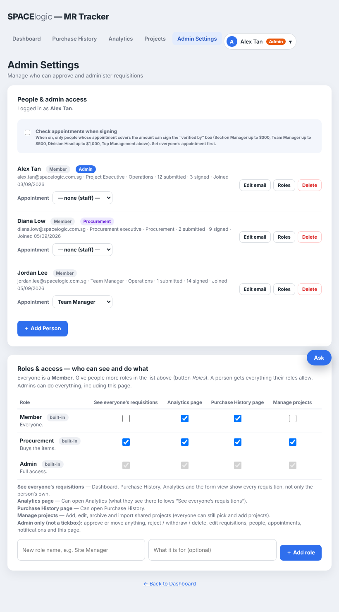

User Manual & FAQ
Everything you need to submit, approve, and track purchase requisitions in MR Tracker — plus quick answers at the bottom.
How it works
Every requisition moves through the same four stages, in order. Click a stage below to see what happens at each one.
Creating an account
Anyone with a @spacelogic.com.sg company email can create an account — no admin approval needed.
- Go to the sign-in page and click Sign up.
- Enter your full name and your company email, then choose a 4-digit PIN and type it twice to confirm.
- A 6-digit verification code is emailed to you. Enter it on the next screen to finish creating your account.
- Optionally add your position and department — or skip this and add it later.


Signing in
Every time you visit MR Tracker, sign in with your company email and 4-digit PIN. There is no public list of names, so nobody can browse who has an account.
After 5 wrong PIN attempts on an account, it is locked for 15 minutes.
Your session stays active until you close the tab or click Log out. If someone else needs to use the same computer, always log out first — PINs are personal and shouldn't be shared.
Submitting a requisition
- From the dashboard, click + New requisition. This opens the full form.
- Fill in the project details — start typing the project name or PC no. and pick it from the list to fill in the location, PC no. and PM. Then add each material line by line: name, description, quantity, unit price, and any delivery/tax cost. Click the Item box to pick something you have bought before; its price and link fill in for you.
- If your item is priced in another currency, use Currency converter above the materials table. It fetches a live rate (and tells you if it could not, so you can type one in).
- If an item has a supplier or product page, paste the URL into the Link field — it becomes clickable in the exported PDF later.
- At the bottom of the form, press Submit for approval. The requisition is saved and you get one signing link to send.

Once submitted, you'll see who has to sign (based on the total) and get a link for the first person. You can copy it, or use the built-in send by email box to email it directly — no login needed for them to open it.
Using it on a phone
On a phone the tracker opens in a simple view with only what you need on the go: the Dashboard (what needs you first), opening and signing requisitions, a new requisition, My Drafts, Purchase History prices, and Settings → Account and Notifications.
Analytics, Projects, Admin Settings, exporting (PDF / CSV / Share), Duplicate, the currency converter, the Suppliers tab and reminder limits are hidden. Need one of them? Open your name menu → Switch to full version. The phone remembers your choice; switch back from the same menu. Computers always show the full version.
Light and dark mode
Open your name menu → Settings → Account → Appearance and choose Auto (follows your phone or computer), Light or Dark. It applies to the Dashboard, Purchase History, Drafts, Settings and Analytics on that device. The requisition form and the signing pages stay light, like the paper form.
Saving drafts
You do not have to remember to save. As soon as the form has at least one item, it saves itself to your account a moment after you stop typing (you will see “Auto-saved to My Drafts” under the buttons). You can still press Save Draft to save at once.
Open My Drafts (on the Dashboard or the form) for a full page listing every draft with its item count, total and last-saved time. Press Continue to carry on from any device, or Delete to throw one away. A draft leaves the list when you submit it.
If your requisition is declined
It is flagged on your dashboard, and the reason and the person who declined it show right on the row or card. Click it to open the full form, then press Fix & Resubmit in form — this reopens the complete form with everything you already entered, ready to fix.
Withdrawing a request
Changed your mind, or the request is no longer needed? Click the requisition on your dashboard to open it, then press Withdraw. This is available to you as the original requester (and to admins), and only before it's been purchased. Withdraw and Delete are kept apart from the other buttons so they are hard to press by mistake.
Approving or declining a requisition
When it's your turn to review, you'll get a link from the requester. It opens the requisition laid out like the SPACElogic form.
- Open the link and check the project details and items.
- Tap the highlighted box next to your role (Tap to sign or decline).
- Approve & sign: draw your signature. If you are signed in, you also enter your PIN and it is linked to your account; if not, type your name — no account needed.
- Decline: give a short reason. The requester sees it and can fix and resubmit.
If a step is already tied to someone's account, only that person (signed in) can sign it.

After you sign, the same link opens on the next person's turn. If you picked a verifier on the form they were notified automatically, and when the manager signs, everyone with the Procurement role is notified (if they turned notifications on). Otherwise just forward the link. Signing happens only through the link; the dashboard is for tracking.
If your admin turned on Check appointments when signing, the verification box can only be signed by someone who is signed in and whose appointment covers the amount; others see a message saying who is needed.
Using the dashboard
The dashboard is where everything lives: your own submissions, anything waiting on your signature, and — if your role allows it (for example Admin or Procurement) — every requisition in the system.

- Stage boxes — show counts by stage, and double as a filter. Click any stage to see just those requisitions.
- Needs action — shows only the requisitions waiting on you, such as a declined one to fix.
- Search — find anything by tracking number, project name, or requester.
- List or Cards — switch the layout with the buttons at the top of the list. List is a table you can group by status, stage, project, requester or month. Cards shows one column per stage, in the same order as the stage boxes; click a column title to fold it away.
- Point to preview — rest your mouse on a row or card to see its items and who has signed.
- Click to open — click a row or card (or the blue REQ number) to open the full form, where the approval chain and all the buttons are.


Projects
The Projects page is the list everyone picks from on the requisition form. Choosing a project fills in its location, PC no. and PM.
- Add a project — anyone can. Press + Add project on the Projects page, or press Save this project for everyone on the form after typing a project that is not in the list yet.
- Correct or remove one — admins can edit, archive or restore a project, or paste a whole list from Excel. Archiving hides a project without deleting it, so older requisitions keep their details.
Purchase History
Search for an item to see what we paid, which supplier, and when. Tick items to add them to a new requisition. Similar item names are matched automatically; you can combine or separate them. Search looks only at the item name and description.
Analytics
Spending, approval speed and price insights. You see your own requisitions; people whose role allows it (for example Admin or Procurement) see everyone's. The page is hidden for roles that do not include it.
Who signs, by amount
The total of the requisition decides who must verify it (the first signature). The form shows this as soon as you add items, and the Approval rules button opens the full table:
- up to $300 — Section Manager (or above)
- up to $500 — Team Manager (or above); for the ID team, above $500 needs Top Management until a Division Head is appointed
- up to $1,000 — Division Head (or above)
- above $1,000 — Top Management
Orders of $50,000 and above also need the vendor quotation reference and the PO number; from $150,000 an LOA number as well (unless it is supply of goods only, such as furniture or lighting). The form will not submit without them.
Procurement then approves and buys, and the requester signs Received by when the items arrive. The supply date should be at least 3 working days after you submit — the form warns you if it is sooner, and you get a reminder when the supply date arrives and nothing is received.
Settings & notifications
Click your name → Settings. Everything you can change lives there, in three tabs: Account (profile, saved signature, PIN), Notifications and Reminders.
Reminders: set your own overdue limit for each stage, in hours or days. If one of your own submissions waits longer, it shows as overdue on your dashboard and in the assistant. Switch a stage off to stop checking it.
Notifications: get a message when something needs you. Press Connect next to Telegram, then Start in Telegram; switch on Email to get the same messages in your inbox; and/or switch on This device for a pop-up alert on this phone or computer (on iPhone, first use Share → Add to Home Screen and open the app from there). Then choose what to be told about: needs my action, progress on my requests, declined, or overdue reminders. Send me a test checks it works. If you have never set this up, you are offered it after you send out a form.

Who gets which notification (admins)
In Admin Settings → Notifications — who gets what, each event has an on/off switch, tick boxes for who is told (the requester, the person picked as verifier, the next signer if named, Procurement, whoever bought it, all admins) and an Also send to list for specific people. The events are: request sent for verification · manager signed · procurement signed · items received · declined · a stage is overdue · supply date reached.
Procurement means everyone who has the Procurement role. To hand the job to someone else, give them the role (Roles button on their name) and remove it from the previous person. Each person still chooses their own channels in Settings, so remind new contacts to switch Telegram, Email or device alerts on.
Roles & access (admins)
In Admin Settings → Roles & access you decide who can see and do what. Everyone is a Member; use the Roles button on a person to add roles such as Procurement or Admin (or roles you create). A person gets everything their roles allow: seeing every requisition (not just their own), opening Analytics or Purchase History, and managing the shared projects. If someone opens a page their role does not include, they see a short message instead.
Exporting & printing
Open the full form of any requisition (click it on the dashboard) to Print or Export PDF — a complete, formatted record including every signature and timestamp, suitable for filing or sharing outside the system.

Your profile & PIN
Click your name at the top right, then Settings (Account tab) to update your name, position or department, change your PIN or remove your saved signature. Your company email is your sign-in ID, so it can't be changed there; ask an admin if it needs correcting. In the same window, use Change PIN — you'll need your current PIN to confirm the change.
The version number is shown at the bottom of that menu, under Log out. Click it to read the list of what's new again.
Managing people (admins only)
Admins can open Admin Settings to see every account — name, email, position, submission and signature counts — and:
- Add Person — pre-create an account for someone directly, without waiting for them to sign up themselves.
- Delete — remove an account. Their name stays attached to any past requisitions; only the login itself is removed.
- Roles — give a person roles such as Admin or Procurement (or roles you create); see Roles & access. There must always be at least one admin.
- Appointment — Section Manager, Team Manager, Division Head or Top Management. It decides which amounts they can verify (see Who signs, by amount).

Admins can open any requisition and click Edit in form — the changes are made in the form itself. Next to it is Reject, which sends it back with a reason so the requester can fix and resubmit. Withdraw and Delete are on the other side, kept apart. Reject and withdraw are available until it's purchased. Admins can also manage the Projects list.
Frequently Asked Questions
What email should I sign up with?
Your real @spacelogic.com.sg company email. It's required — the system won't accept personal email addresses (Gmail, Yahoo, etc.) — and each email can only be linked to one account.
I forgot my PIN. What do I do?
PINs are stored securely and can't be looked up or reset by anyone, including admins. Ask an admin to open Admin Settings, delete your account, and re-add you (or let you sign up again) with a new PIN. You'll keep your name on any past requisitions either way.
Can I use the same account on multiple devices?
Yes — sign in with your company email and PIN on any device, anytime. There's nothing to install and nothing tied to a specific computer or phone.
Can two people share one login?
No. Every signature is legally meaningful — it's how the system proves who approved what. Each person needs their own account so their name and PIN are the only thing that can sign on their behalf.
Who has to sign my requisition?
The total decides who verifies it (Section Manager up to $300, Team Manager up to $500, Division Head up to $1,000, Top Management above). The form shows it as you add items and you can pick the person to send it to. Then Procurement approves and buys, and you sign Received by when the items arrive. The Approval rules button shows the full table.
Can I edit a requisition after submitting it?
Not directly, unless it gets declined. If you need changes before anyone has approved it, ask that person to decline it with a reason, then use Fix & Resubmit in form to fix and resend it.
What happens when a requisition is declined?
It's flagged on your dashboard with the reason. Open it, click Fix & Resubmit in form, fix what was flagged, and resubmit. This restarts the entire approval chain from the Team Manager — even if it was declined later at Procurement — so everyone re-confirms the revised request.
Can I withdraw a requisition after submitting it?
Yes, any time before it's been purchased — at Submitted or Manager Approved (before Procurement has bought it), or if it was declined. Open it from your dashboard and click Withdraw. The original requester (or an admin) can do this. Once it reaches the Purchased stage, withdrawal is no longer available.
What if the next person hasn't signed yet?
Nothing moves forward until they do — that's intentional, so approvals happen in order. You can set your own Reminder Settings to get flagged if a stage sits pending longer than you'd expect.
What if I lose the sign-off link that was sent to me?
Ask the requester to open the requisition on their dashboard and click Regenerate link — this invalidates the old link and gives you a fresh one.
Someone says they can't get their verification code. What do I do?
They press I didn't get it — ask an admin to verify me on the sign-up screen. The next time you (an admin) sign in, a window “People waiting for verification” lists them. Press Verify for people you know, or Reject. Verified people sign in with the email and PIN they chose. Requests stay open for 7 days.
I didn't get the verification email when signing up
Check your junk / spam folder first. If it isn't there, press I didn't get it — ask an admin to verify me on the sign-up screen. Admins see your request when they next sign in. Once an admin verifies you, sign in with your email and the PIN you chose.
Is there a guide for new users?
Yes. A short step-by-step guide opens by itself the first time you create an account. Open it again any time from your name menu → Quick tour.
Do I have to sign in again every time I open a link from a chat?
No. On the sign-in page, leave Keep me signed in on this device ticked and you stay signed in for 30 days, including when a link opens in a new tab or app. Signing a requisition still asks for your PIN each time. Untick it on a shared computer, and use Log out when you are done — that also forgets this device.
Do I need to type @spacelogic.com.sg when I sign in?
No. Type just the part of your email before the @, and @spacelogic.com.sg is added for you. This works on the sign-in, sign-up and admin pages.
Can I save my signature so I don't redraw it every time?
Yes, if you have an account. When you sign (signed in), tick Save this as my signature for next time. Next time the signing window says “Your saved signature will be used” and you only enter your PIN. Choose Draw a new one any time, or remove it under Settings → Account → Saved signature. Signatures already on a requisition never change.
I signed without an account, then created one. Where is my requisition?
If you create the account (or sign in) on the same browser within 7 days, using the same name you typed when signing, the requisition is attached to your account and shows on your Dashboard.
I already have an account. How should I sign?
Sign in first (company email + PIN). Then open the signing link: it says “Signing as
I signed without an account. Do I need one?
No, signing never needs an account. If you want to track the requisitions you sign or submit, and raise your own requests, you can create a free account afterwards with your company email and a 4-digit PIN.
What can I ask the assistant?
Press the blue Ask button at the bottom right of any page. Examples:
- “Where is REQ-00031?”, “who signed REQ-00030?”, “what items are in REQ-00027?”
- “Did my screws arrive?” — it says whether the requisition is Received, only Purchased, or not bought yet.
- “Which supplier did I use for cable?”, “how much did we pay for screws?” — supplier (from the product link), price and date.
- “What needs my action?”, “which requisition is stuck?”, “show my declined requisitions”.
- “Give me a summary”, “how much did I spend this month?”, “where is Analytics?”
- How-to questions: withdrawing, fixing a declined requisition, forgotten PIN, projects, Purchase History, exporting and more.
Small typos are fine.
Does it use AI? Can it change anything?
It answers from your own requisitions and the built-in help first. Only if it can't answer does it ask a small AI model, with a daily limit per person and a monthly limit for the whole company. It only reads: it never signs, withdraws, rejects or edits anything. AI answers are labelled, so double-check anything important. You only ever see requisitions you could already see on the dashboard.
How do I change the dashboard to cards?
Use the List / Cards buttons at the top of the list. Cards shows one column per stage; click a column title to fold it away. Your choice is remembered on that browser.
Why does a box pop up when I point at a row?
It is a quick preview of the items and who has signed, so you do not have to open every requisition. Click the row or card to open the full form.
My project isn't in the list. What do I do?
Type its name, location, PC no. and PM in the form, then press Save this project for everyone. Or add it on the Projects page. Admins can correct or archive projects.
Where do I see the version number?
Click your name at the top right. The version is under Log out; click it to read the list of what's new.
Why didn't I receive a notification?
Work down this list: 1) in Settings → Notifications, is at least one of Telegram, Email or This device switched on? Nothing is sent until you turn one on (Email is off by default). 2) Is that type switched on under “What to tell me”? 3) Press Send me a test. 4) Ask an admin to check Admin → Notifications — who gets what that you are included for that event. 5) For email, check your spam folder. On iPhone, device alerts only work once the site is added to the Home Screen.
Who gets notified, and when?
Nothing is sent automatically any more — each person chooses in Settings → Notifications where to be told (Telegram, email, this device) and about what (needs my action, progress on my requests, declined, overdue). Admins decide who each event goes to in Admin → Notifications — who gets what. By default: you are told when you submit and when each step is signed; the verifier you pick is told it is waiting for them; Procurement is told when the manager has signed; you are told if it is declined. You can also manually email any sign-off link from the copy-link screen.
How do I get notifications on my phone?
Two ways, both in Settings → Notifications. Telegram: press Connect, then Open Telegram and press Start — messages arrive in Telegram with an Open button. This device: switch it on and allow notifications; on an iPhone first tap Share → Add to Home Screen and open MR Tracker from there. Use Send me a test to check it works.
Why does the form ask for a PO or vendor quotation?
Orders of $50,000 and above need the vendor quotation reference and PO number, and from $150,000 an LOA number (unless it is supply of goods only). Fill them in where the form shows the yellow box under the total. See Who signs, by amount.
Is my data secure? Who can see my requisitions?
You see your own submissions and anything assigned to you for signing. Admins — and anyone whose role includes “See everyone's requisitions”, such as Procurement — see everything. This is enforced at the database level, not just hidden in the screen — so it can't be bypassed by guessing a link or URL.
How do I become an admin?
An existing admin gives you the Admin role in Admin Settings (button Roles on your name). There must always be at least one admin in the system.
Do I need to install anything?
No — MR Tracker runs entirely in your web browser. No app, no plugin, works on desktop and mobile.